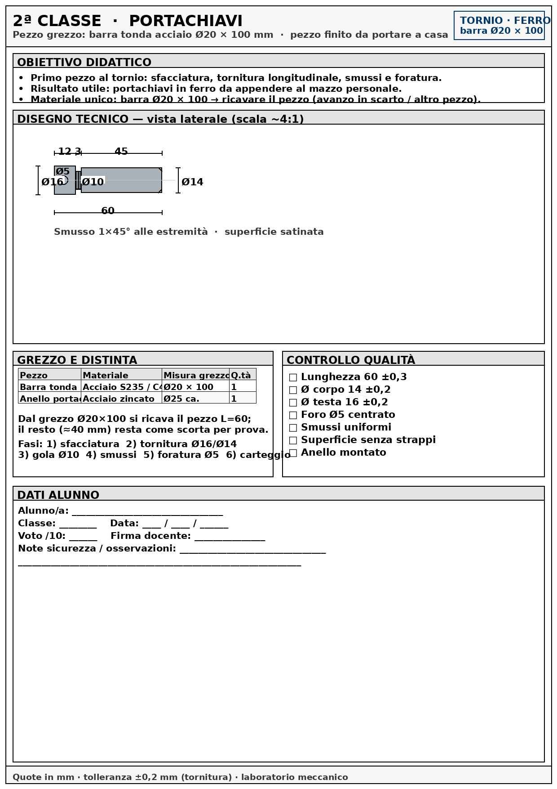
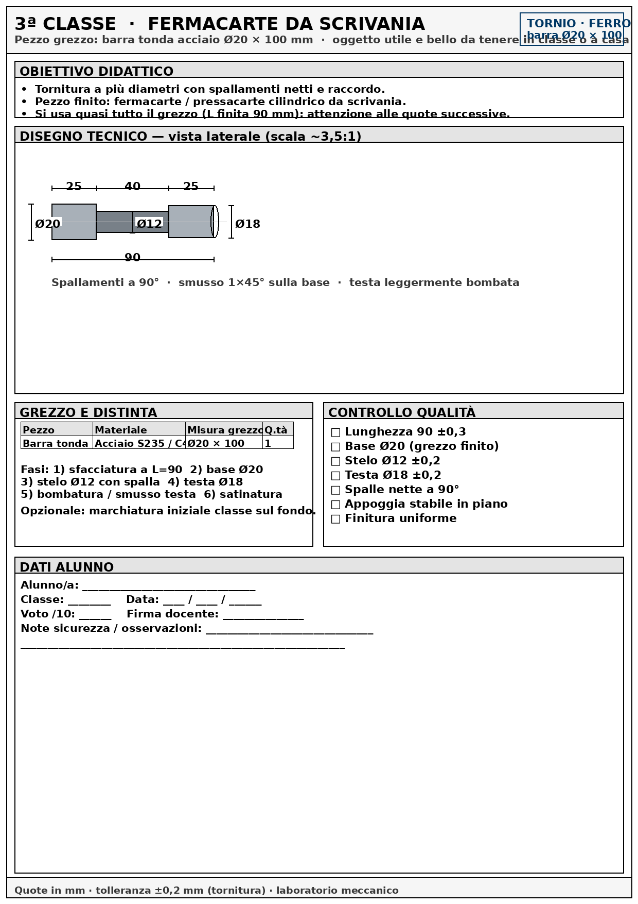
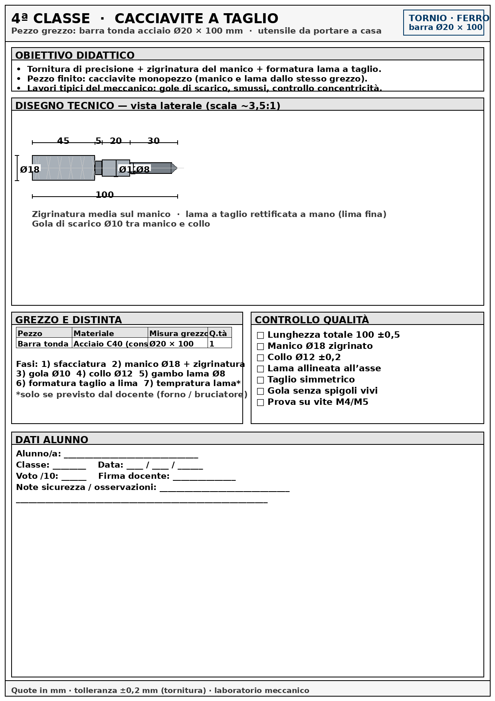
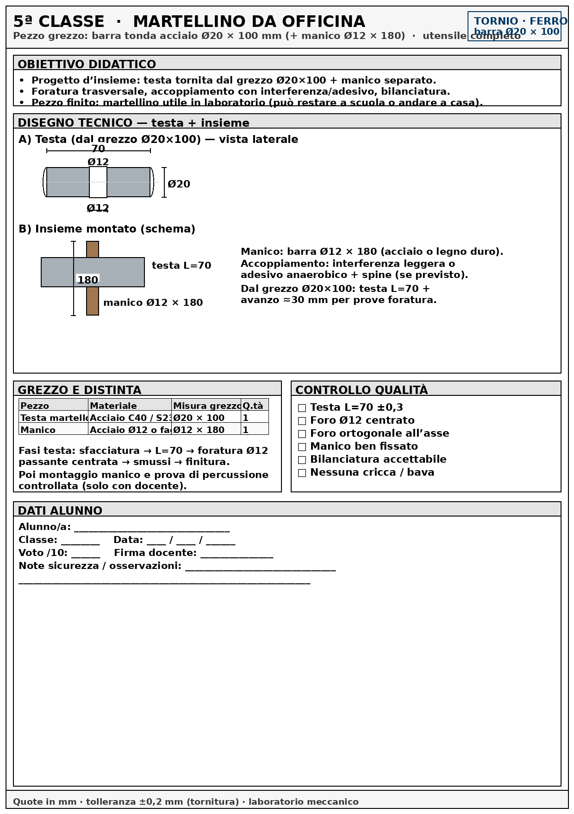

Progetti ferro — tornio
Quattro pezzi utili da barra grezza Ø20 × 100 mm, difficoltà crescente (2ª→5ª).
Non è falegnameria: lavorazione del ferro al tornio.

2ª — Portachiavi
Tornitura base, smussi, foratura Ø5 · da portare a casa
Scarica PNG

3ª — Fermacarte da scrivania
Più diametri e spallamenti · oggetto utile / bello
Scarica PNG

4ª — Cacciavite a taglio
Zigrinatura, gola, lama · utensile monopezzo
Scarica PNG

5ª — Martellino da officina
Testa dal grezzo Ø20×100 + manico · insieme montato
Scarica PNG
Su iPhone: apri l’immagine → tieni premuto → “Aggiungi a Foto” / “Salva immagine”.